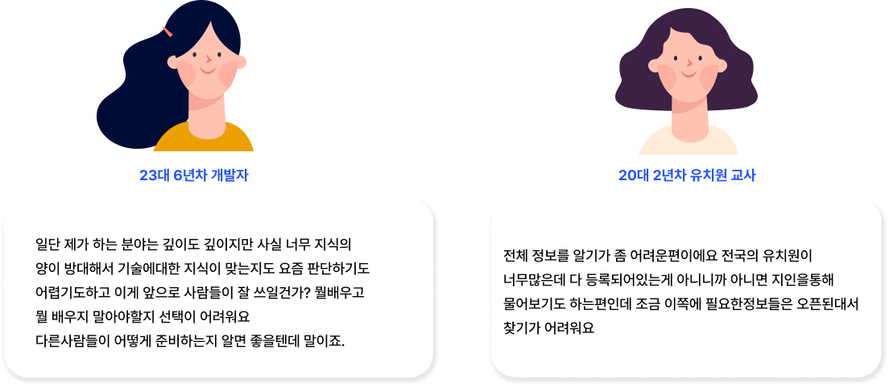

03 Twenty Interviews
20 Interviews, Face to Face
직군을 섞은 이유가 있었어요.
2021년 12월, 취준생·이직 준비자 20명을 직접 만났어요. 일부러 직군을 섞어서 모았어요. 특정 직군만 보면 그 직군 전용 도구가 될 것 같았거든요.
결과는 반반이었어요. 준비 항목처럼 구체적인 내용은 직군마다 달랐고, "어디서부터 시작할지 모르겠다"는 막막함은 전부 같았어요. 이 공통분모가 기능의 기준이 됐어요.


인터뷰 요약(좌) → 복잡한 일정관리·동기부여·보장성 문제를 기능 목표로 번역(우)